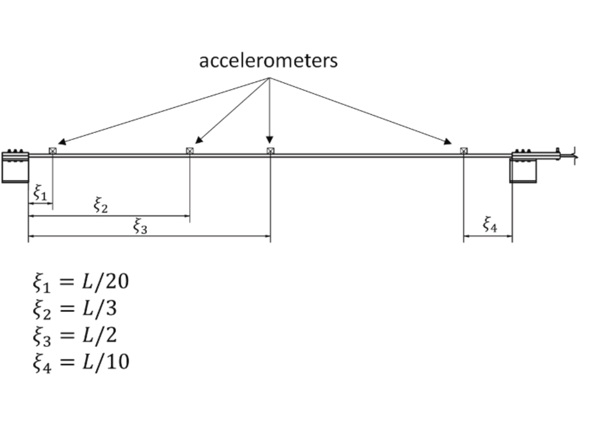
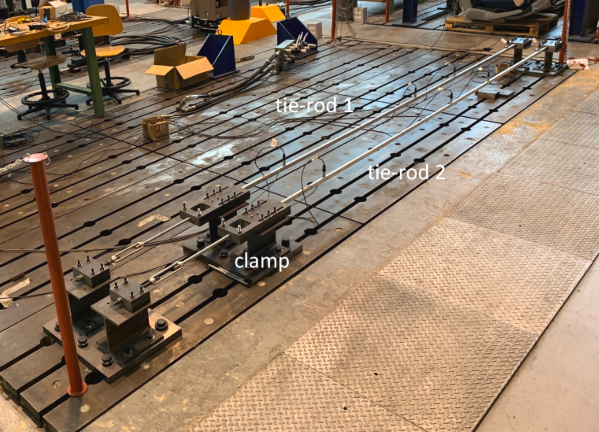

This project involved conducting an Operational Modal Analysis (OMA) to assess the structural health of tie rods. Unlike traditional modal analysis, OMA does not require artificial excitation but instead relies on ambient vibrations, leveraging the Natural Excitation Technique (NeXT). This methodology is highly beneficial for health monitoring, as it allows us to differentiate between natural degradation and critical structural damage by examining shifts in modal parameters.
The system consisted of a clamped-clamped tie-rod equipped with four accelerometers positioned at 5%, 33.3%, 50%, and 90% along its length. Signal acquisition was carried out under three distinct conditions:

The core of the analysis relied on the Frequency Domain Decomposition (FDD) algorithm:
By extracting the peaks of the singular value curves, the first four natural frequencies were successfully identified (ranging from approximately 13 Hz to 81 Hz). I observed distinct shifts in these frequencies across the healthy, Damage 1, and Damage 2 scenarios.
Additionally, the corresponding mode shapes were successfully reconstructed by extracting the first column of the SVD unitary matrix at the resonance frequencies. To rigorously compare these shapes across the different damage conditions, Modal Assurance Criterion (MAC) values were computed, enabling a reliable evaluation of the tie-rod's structural integrity.
View on GitHub